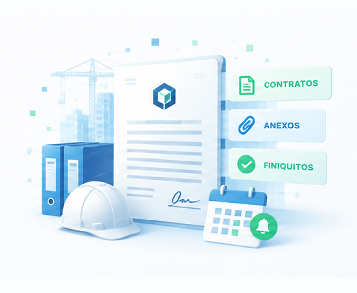
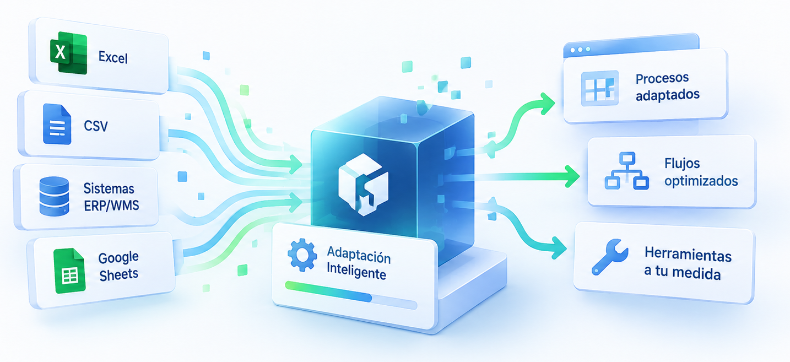
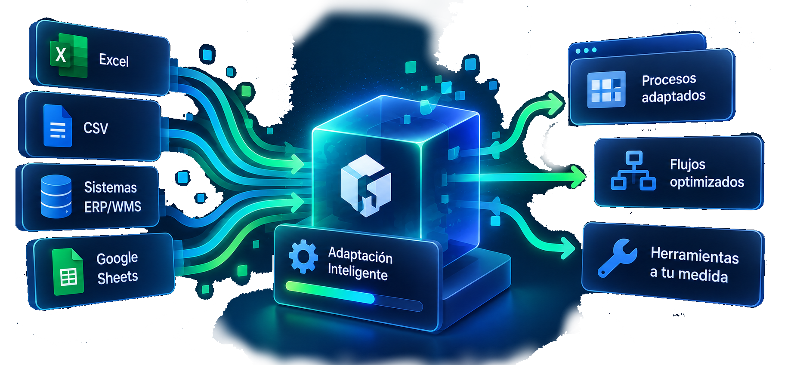

Datos conectados
Relaciona la información para que pueda consultarse y utilizarse en los procesos correspondientes.
Cubika centraliza datos, procesos y herramientas en una plataforma que se adapta a la forma en que trabaja tu empresa.
Empieza resolviendo lo que hoy genera más fricción y evoluciona incorporando nuevas capacidades cuando las necesites.
Información dispersa, procesos manuales, herramientas que no conversan entre sí y tareas que terminan convirtiéndose en cuellos de botella.
Cubika ayuda a reunir la información y relacionarla con los procesos donde se necesita, para trabajar con mayor continuidad y control.
Cada empresa opera a su manera. La tecnología debe adaptarse.
La base común donde se conectan datos, procesos, usuarios y herramientas.
Relaciona la información para que pueda consultarse y utilizarse en los procesos correspondientes.
Incorpora las funcionalidades que necesita cada operación, sin tener que utilizar todos los módulos.
Configura combinaciones de capacidades para responder a procesos y requerimientos específicos.
Cada organización puede elegir las capacidades pertinentes para sus procesos y ampliar la solución cuando surjan nuevas necesidades.
El recorrido va desde los datos de origen hasta su uso en procesos operacionales y su seguimiento.

Reúne información procedente de planillas, archivos y otras fuentes que utiliza tu empresa.
Ordena y valida los datos para darles una estructura consistente y facilitar su uso.

Utiliza la información organizada en módulos y herramientas orientados a tareas concretas.
Consulta registros y resultados de los procesos para facilitar el seguimiento y el control operacional.
Explora módulos orientados a tareas concretas. Puedes comenzar por la capacidad que necesitas y evaluar cómo combinarla con otros procesos.

Registra ingresos, salidas y ajustes, y consulta el historial de movimientos para apoyar el control del inventario.

Prepara etiquetas a partir de la información y los requerimientos definidos para tus procesos operacionales.

Identifica excedentes y faltantes entre sucursales para apoyar decisiones de traslado y disponibilidad.

Genera y administra contratos, anexos y otros documentos mediante plantillas, con seguimiento de registros y vencimientos.

Si tu proceso requiere algo distinto, podemos evaluar cómo adaptar flujos y herramientas sobre la base de Cubika.
Estos ejemplos muestran cómo distintas industrias pueden utilizar capacidades de Cubika según sus procesos y prioridades.
Relaciona lotes, vencimientos y datos de cubicación para apoyar el seguimiento de productos.
Organiza la recepción, los movimientos entre sucursales, el etiquetado y la consulta de existencias.
Gestiona información de lotes, series y registros para apoyar el seguimiento de productos.
Organiza procesos y conciliaciones para apoyar el control de operaciones logísticas para terceros.
Centraliza información de trabajadores, obras y documentos vinculados a la operación de construcción.
Organiza datos de origen, peso y cubicación para apoyar el seguimiento de productos destinados a exportación.
Podemos evaluar cómo combinar capacidades o adaptar procesos a necesidades particulares de tu empresa.
Cuando un proceso requiere algo distinto de las funcionalidades disponibles, podemos evaluar ajustes en sus flujos y herramientas, manteniendo la base común de la plataforma.
Una base compartida para necesidades particulares.

Comienza con un proceso. Amplía la solución cuando tenga sentido.
No necesitas abordar todos tus procesos al mismo tiempo. Puedes empezar por una necesidad prioritaria y sumar capacidades gradualmente, aprovechando la información que ya esté organizada en la plataforma.
Cuéntanos qué proceso necesitas mejorar y revisemos qué capacidades de Cubika podrían ayudarte.